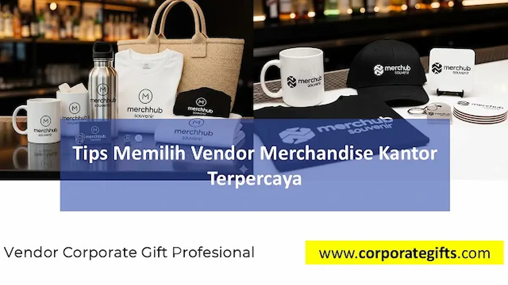

Corporate Gifts ID - Vendor merchandise kantor terpercaya dapat dikenali dari empat pilar kriteria utama: portofolio rekam jejak B2B yang jelas, jaminan mutu material premium, kelengkapan fasilitas kustomisasi branding, serta transparansi penawaran harga tanpa biaya tersembunyi. Memilih rekanan produksi yang tepat bukan hanya menghindarkan divisi procurement dari risiko keterlambatan pengiriman, melainkan memastikan identitas korporat tampil memikat dan berkelas di hadapan publik.
Poin Kunci Memilih Vendor Merchandise Kantor:
- Rekam Jejak & Portofolio B2B: Pilih rekanan yang memiliki portofolio proyek terverifikasi menangani instansi BUMN, korporasi swasta, dan event skala nasional.
- Kualitas Fisik & Sampel Pra-Produksi: Wajib meminta sampel nyata (mockup approval) untuk menguji ketahanan material, kerapian sablon, serta akurasi warna pantone brand.
- Fleksibilitas Teknik Branding: Menyediakan beragam opsi cetak industri mulai dari laser engraving presisi, bordir komputer, hingga UV flatbed printing beresolusi tinggi.
- Kepatuhan Hukum & Perpajakan: Memiliki legalitas usaha lengkap (NIB, NPWP, PKP) dan sanggup menerbitkan faktur pajak PPN serta surat jalan resmi.
Di tengah dinamika iklim kompetisi bisnis modern, cinderamata perusahaan tidak lagi diposisikan sebagai sekadar pemberian formalitas belaka. Produk suvenir kini bertransformasi menjadi sarana komunikasi pemasaran non-verbal yang membawa nama baik, nilai profesionalisme, serta reputasi perusahaan di hadapan klien dan masyarakat luas.
Banyak perusahaan memanfaatkan merchandise perusahaan sebagai strategi efektif untuk branding dan apresiasi guna mengokohkan loyalitas klien maupun mempererat hubungan internal antar-karyawan. Namun, jika proses kurasi dan eksekusinya diserahkan kepada rekanan yang kurang profesional, investasi promosi yang bernilai puluhan juta rupiah tersebut dapat berujung pada kekecewaan dan kerugian reputasi.
Mengapa Memilih Vendor Merchandise yang Tepat Begitu Krusial?
Merchandise promosi merupakan duta visual perusahaan yang berinteraksi langsung dengan tangan dan pandangan penerimanya setiap hari. Bayangkan jika sebuah botol minum berlogo perusahaan Anda bocor saat digunakan oleh direktur rekanan, atau resleting tas laptop seminar robek pada hari pertama acara. Impresi negatif tersebut secara otomatis melekat pada kredibilitas brand Anda.
Oleh karena itu, vendor merchandise bukan sekadar penjual komoditas barang grosir, melainkan mitra strategis operasional yang bertanggung jawab menjaga integritas nama baik institusi Anda sepanjang siklus acara berlangsung.
4 Kriteria Utama Vendor Merchandise Kantor Terpercaya
1. Portofolio Rekam Jejak dan Klien Korporat Nyata
Vendor yang memiliki kredibilitas tinggi selalu mendokumentasikan hasil pekerjaan mereka secara transparan. Tinjau apakah mereka pernah menangani pengadaan untuk kementerian, perbankan, BUMN, atau perusahaan multinasional terkemuka. Pengalaman menangani volume pesanan ribuan unit dalam tenggat waktu ketat menunjukkan kesiapan sistem manajemen lini produksi dan kontrol kualitas yang disiplin.
2. Mutu Material Produk Standar Industri
Produk suvenir yang baik memiliki durabilitas pemakaian jangka panjang, seperti merchandise perusahaan fungsional berupa tumbler stainless steel SUS 304 food-grade, notebook hardcover berbahan kulit sintetis impor, tote bag kanvas tebal tahan sobek, atau power bank bergaransi resmi dengan sertifikasi keamanan baterai. Pastikan vendor memiliki akses langsung ke pabrikan bahan baku bermutu tinggi.
3. Fasilitas Teknologi Custom Branding Lengkap
Kemampuan menerjemahkan identitas visual brand ke atas aneka permukaan material adalah pembeda utama antara vendor profesional dan makelar perantara. Vendor terkemuka memiliki mesin cetak internal yang modern, mulai dari laser marking untuk pulpen metal, mesin bordir komputer 12 kepala untuk polo shirt, hingga UV flatbed digital yang mampu mencetak gradasi warna rumit sesuai palet warna Pantone resmi perusahaan Anda.
4. Transparansi Penawaran Harga dan Dokumen Legal
Vendor profesional selalu melampirkan lembar surat penawaran harga (RAB) yang terinci secara gamblang: biaya cetak per unit, biaya pembuatan plat cetak (moulding/setup fee), batasan minimum order (MOQ), estimasi durasi pengerjaan, hingga biaya asuransi pengiriman kargo. Mereka juga siap menerbitkan dokumen legal perpajakan sah seperti e-Faktur PPN, kuitansi bermeterai, serta rekening bank atas nama badan usaha resmi.

Pemeriksaan sampel fisik merchandise kantor sebelum memasuki tahapan produksi massal.
SOP Verifikasi Kredibilitas Vendor Sebelum Tanda Tangan SPK
Sebelum menerbitkan Surat Perintah Kerja (SPK) atau mentransfer uang muka pembayaran, jalankan tahapan pemeriksaan standar berikut guna memitigasi segala potensi kendala:
- Audit Legalitas Perusahaan: Mintalah salinan Nomor Induk Berusaha (NIB) berbasis risiko, NPWP Badan, serta Surat Pengukuhan Pengusaha Kena Pajak (SPPKP) untuk memastikan legalitas entitas bisnis rekanan.
- Wajibkan Pembuatan Sampel Fisik (Pre-Production Sample): Jangan pernah menyetujui produksi massal hanya berdasarkan visual di layar monitor komputer. Mintalah prototipe fisik nyata yang sudah dibubuhi logo perusahaan untuk menguji ketajaman warna dan kerapian perakitan secara langsung.
- Tinjau Kebijakan Garansi Kerusakan: Pastikan perjanjian kerja sama memuat klausul garansi penggantian unit baru tanpa biaya tambahan apabila ditemukan produk yang cacat produksi atau salah cetak logo saat barang diterima.
- Simulasikan Timeline Logistik Nasional: Tetapkan tanggal penyelesaian produksi minimal 5 hingga 7 hari kerja sebelum hari H acara guna mengantisipasi kemungkinan kendala cuaca atau keterlambatan ekspedisi antarpulau.
Tabel Komparasi Metode Branding pada Merchandise Kantor
Karakteristik produk merchandise menuntut teknik aplikasi logo yang tepat agar tahan lama dan tampak eksklusif. Gunakan tabel komparasi berikut saat berdiskusi dengan vendor:
| Metode Branding | Material yang Sesuai | Keunggulan Utama | Ketahanan Logo | Estimasi Biaya / MOQ |
|---|---|---|---|---|
| Laser Engraving (Grafir) | Stainless Steel, Logam Aluminium, Kayu Solid | Tampilan monokrom mewah, presisi tinggi, garis logo tajam | Permanen Seumur Hidup (Anti-Kikis) | Ekonomis / MOQ Fleksibel Mulai 50 Pcs |
| UV Flatbed Printing | Plastik ABS, Akrilik, Kaca, Kulit Sintetis, Logam | Full color hingga 1440 DPI, gradasi halus, bisa cetak emboss timbul | Sangat Tinggi (Tahan Gores & Air) | Menengah / Cocok untuk Pesanan Custom Detail |
| Bordir Komputer | Kain Kanvas, Twill, Fleece, Kaos Polo Lacoste | Tekstur benang timbul, kesan profesional dan berbobot | Sangat Tahan Lama (Kuat Dicuci Berulang) | Tergantung Kerapatan Jahitan / MOQ 50-100 Pcs |
| Deboss & Hot Stamping Foil | Kulit Asli, Kulit PU, Kertas Daur Ulang Mewah | Efek cekung klasik dengan kilau emas atau perak yang anggun | Tahan Lama (Bentuk Pola Tetap Terlihat) | Memerlukan Klise Plat Logam / Cocok Pesanan Massal |
Kapasitas Vendor dalam Mengikuti Tren Merchandise Modern
Dunia suvenir korporat terus berevolusi sejalan dengan perubahan gaya hidup generasi profesional muda dan kesadaran lingkungan global. Rekanan pengadaan yang inovatif mampu memberikan masukan kurasi yang relevan, seperti:
- Merchandise Ramah Lingkungan (Sustainability Trend): Pilihan produk berbahan serat gandum (wheat straw), bambu alami, botol kaca borosilikat, dan tote bag katun organik bersertifikasi ramah lingkungan.
- Smart Gadget & Aksesoris Kerja Hibrida: Wireless charging pad berbahan kayu, pelacak kunci pintar, kabel data multifungsi ramah lingkungan, serta flashdisk OTG berkecepatan tinggi.
- Pengemasan Konseptual Eksklusif (Unboxing Experience): Penataan suvenir ke dalam hardbox bermagnet yang dilengkapi sekat busa beludru presisi, kartu ucapan berteknologi QR code video, dan pita satin bernuansa brand.
Risiko Fatal Memilih Rekanan Pengadaan yang Tidak Profesional
Mengorbankan kredibilitas vendor demi selisih harga yang sedikit lebih murah sering kali berujung pada konsekuensi berat, di antaranya:
- Keterlambatan Serah Terima Barang: Pesanan tidak selesai tepat waktu saat acara seminar atau pameran sudah berlangsung, sehingga perusahaan kehilangan kesempatan promosi emas.
- Deviasi Warna dan Mutu Cetak: Logo perusahaan tercetak pudar, warna melenceng jauh dari standar identitas visual, atau sablonan retak hanya dalam sekali pemakaian.
- Masalah Audit Akuntansi Perpajakan: Vendor perorangan tanpa legalitas badan hukum tidak dapat menerbitkan faktur pajak PPN atau tanda terima resmi, menyulitkan proses pencairan anggaran di bagian keuangan kantor.
Pertanyaan Seputar Pemilihan Vendor Merchandise (FAQ)
Kesimpulan dan Rekomendasi
Memilih rekanan penyedia merchandise kantor terpercaya merupakan investasi strategis yang menentukan sukses tidaknya program pemasaran dan hubungan kemitraan bisnis Anda. Dengan menitikberatkan evaluasi pada portofolio rekam jejak, uji sampel fisik, transparansi biaya, dan komitmen garansi mutu, Anda dapat menjalin kolaborasi yang produktif dan tenang.
Jika perusahaan Anda tengah merencanakan pengadaan merchandise promosi, paket seminar kit, maupun corporate gift set dengan jaminan kualitas prima dan konsultasi mockup 3D gratis, tim spesialis CorporateGifts.ID siap menjadi rekanan pengadaan B2B terpercaya Anda di seluruh wilayah Indonesia.